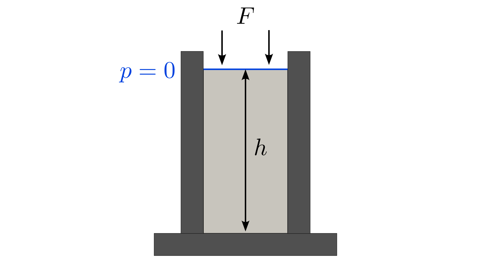
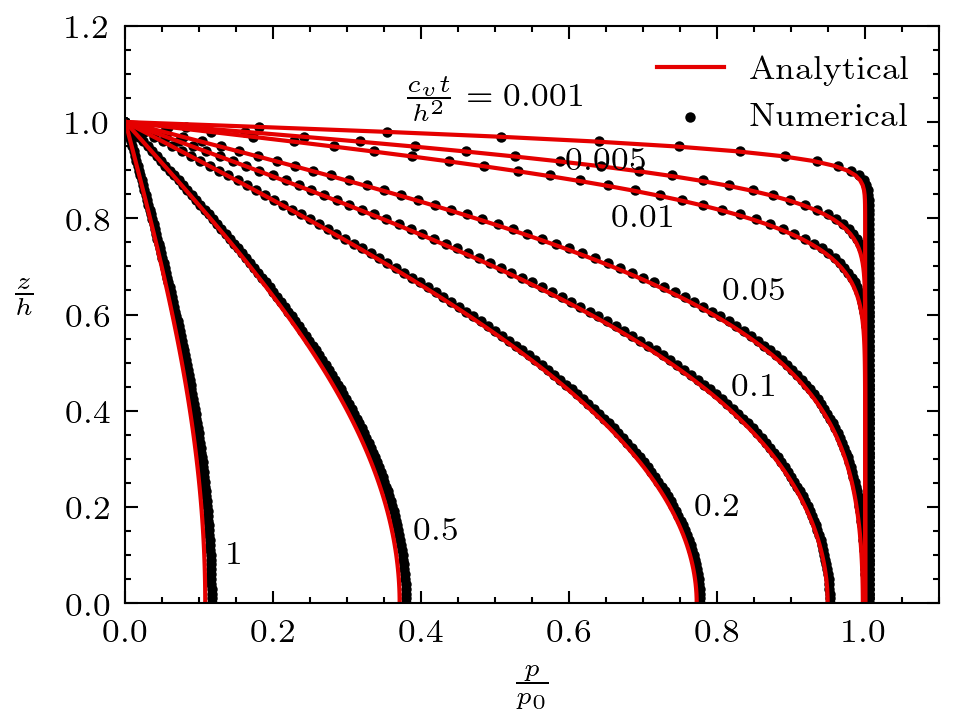
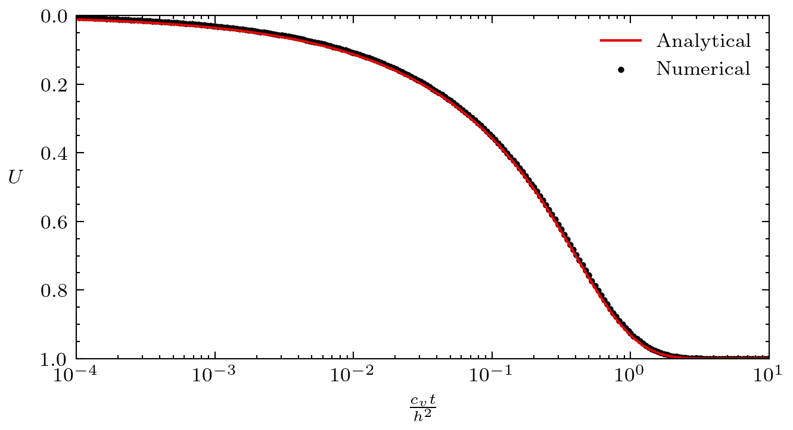

Terzaghi's consolidation problem
The classical Terzaghi's consolidation problem analyzes the one-dimensional deformation delay when compressing soil. A confined soil sample, fully-saturated with water is loaded vertically by a constant stress and its deformation and fluid pressure is observed as a function of time on the vertical axis. This problem is a classical poroelastic problem which can be simplified in one dimension. For more information, please see Chapter 2 in Verruijt (2016).
Setup
A confined soil column of height is loaded vertically at constant stress. The top surface is drained and at , the vertical force of magnitude is applied. This setup is sketched in Figure 1.

Figure 1: Setup for the Terzaghi's problem.
Parameters
Table 1: List of parameters used for the Terzaghi's problem.
| Symbol | Value | Unit | Name |
|---|---|---|---|
| Pa | Bulk modulus | ||
| Pa | Shear modulus | ||
| - | Biot's poroelastic coefficient | ||
| m | Permeability | ||
| Pa s | Fluid viscosity | ||
| - | Porosity | ||
| Pa | Fluid bulk modulus | ||
| Pa | Applied force |
Here are definitions of some poroelastic parameters:
Solid bulk modulus:
Storage coefficient:
Confined compressibilty:
Consolidation coefficient:
Solutions
Verruijt (2016) gives the following solution for the fluid pressure:
For small values of the time parameter , the pressure solution can be simplified as:
The degree of consolidation is defined as:
where is the vertical displacement, the immediate displacement after application of the vertical load and the final displacement. The degree of consolidation varies between (at the moment of loading) and (after consolidation has been completed) and evolves over time.
Its expression is given by Verruijt (2016) as:

Figure 2: Fluid pressure solution for the Terzaghi's consolidation problem.

Figure 3: Consolidation solution for the Terzaghi's consolidation problem.
Complete Source Files
References
- Arnold Verruijt.
Theory and problems of poroelasticity.
Delft University of Technology, 2016.[BibTeX]